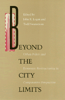

Challenging the notion that there is a single, global process of economic restructuring to which cities must submit
Challenging the notion that there is a single, global process of economic restructuring to which cities must submit


 Challenging the notion that there is a single, global process of economic restructuring to which cities must submit
Challenging the notion that there is a single, global process of economic restructuring to which cities must submit

|  |
Beyond the City LimitsUrban Policy and Economic Restructuring in Comparative Perspectiveedited by John R. Logan and Todd Swanstrompaper EAN: 978-0-87722-944-5 (ISBN: 0-87722-944-9) |
"In their introduction to Beyond the City Limits, Logan and Swanstrom directly challenge the notion of economic restructuring processes as single, uniform, monolithic global processes. They stress not only the variability of these global processes and the consequent potential for political discretion and choice but the need to link more systematically the changes in production processes with changes in 'broader social and political processes.'"
—Urban Affairs Quarterly
This book challenges the notion that there is a single, global process of economic restructuring to which cities must submit. The studies in this volume compare urban development in the United States, Western Europe, and Japan, demonstrating that there is significant variety in urban economic restructuring. The contributors emphasize that the economic forces transforming cities from industrial concentrations to postindustrial service centers do not exist apart from politics: all nation-states are heavily involved in the restructuring process.
"This book [makes] a positive contribution to the growing literature on the urban role in economic growth and regeneration."
—Choice
Preface
Part I: Introduction
1. Urban Restructuring: A Critical View – John R. Logan and Todd Swanstrom
Part II. Urban Policy: National and International Comparisons
2. Political Paradoxes of Urban Restructuring: Globalization of the Economy and Localization of Politics? – Edmond Preteceille
3. Industrial Restructuring, State Intervention, and Uneven Development in the United States and Japan – Richard C. Hill
4. Political Responses to Urban Restructuring: The British Experience under Thatcherism – Michael Parkinson
Part III. The Limits and Possibilities of Local Policy
5. Economics, Politics, and Development Policy: The Convergence of New York and London – Susan Fainstein
6. Postindustrialism with a Difference: Global Capitalism in World Class Cities – H. V. Savitch
7. Urban Deals in Comparative Perspective – Harvey L. Molotch
8. Space for Progressive Local Policy: Examples from the U.S. and the U.K. – Pierre Clavel and Nancy Kleniewski
Part IV. Reflections
9. Beyond the City Limits: A Commentary – Saskia Sassen
10. Theoretical Methods in Comparative Urban Politics – John Walton
About the Contributors
Subject Index
Author Index
John R. Logan is Professor of Sociology at the State University of New York at Albany.
Todd Swanstrom is Associate Professor of Political Science at the State University of New York at Albany and the author of The Crisis of Growth Politics: Cleveland, Kucinich, and the Challenge of Urban Populism (Temple).
Contributors: Pierre Clavel, Susan Fainstein, Richard Child Hill, Nancy Kleniewski, Harvey L. Molotch, Michael Parkinson, Edmond Preteceille, Saskia Sassen, H. V. Savitch, John Walton, and the editors.
Conflicts in Urban and Regional Development, edited by John R. Logan and Todd Swanstrom.
Conflicts in Urban and Regional Development, edited by John R. Logan and Todd Swanstrom, includes books on urban policy and issues of city and regional planning, accounts of the political economy of individual cities, and books that compare policies across cities and countries.
© 2015 Temple University. All Rights Reserved. This page: http://www.temple.edu/tempress/titles/746_reg.html.